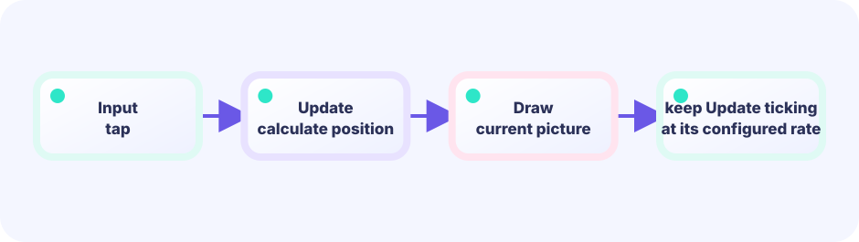
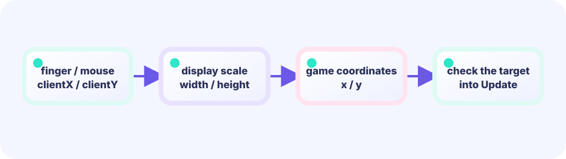

UPDATE
Read input and advance the numbers—score, positions, timers. Do not draw here.
func (g *Game) Update() error★☆☆☆☆ / PLAYABLE
A tiny game where you tap glowing circles as they appear. This is where you learn how a game runs—and how taps become numbers on screen.
Want to run code on your own PC first? See Getting started setup (install Go → empty window). This page’s demo also works in the browser alone.
FIRST-TIME READER
Find where this one line is used, then follow how its value changes on screen. This is the shared game-state boundary: add rules in Update, then choose any independent renderer in Draw. The numbered steps below add one system at a time.
ONE RULE TO TRACE
Match the explanation to this line, then test the change in the game.
func (g *game) Update() error { g.score++; return nil }Numbers → picture
Update advances the state; Draw only reads that snapshot. Its timing and presentation can be replaced without changing the rules. Compare the live WASM views below to see the difference. The top-left is (0,0), and a file using math.Hypot starts with import "math".
UPDATE x=0 → 1 → 2
↓
GAME STATE
↓
Draw(screen)
↓
PIXELSONE GAME, OPEN-ENDED PRESENTATION
Update and the game struct own the facts of the game. The views below observe the same autoplaying position, box, and goal at the same time. Only Draw differs, and these views can be replaced by any other presentation.



PLAYABLE / WEBASSEMBLY
Score with click, tap, or touch. How many hits can you land in 30 seconds? Keep touch targets at least 48dp (about 48 CSS pixels) and show a color or ring immediately when a hit lands.
WHAT'S INSIDE / BEFORE ANYTHING ELSE
A method is a function—a named piece of work—attached to the Game box. The three answers are Update, Draw, and Layout. Update is the game clock, normally ticking about 60 times per second, and owns input, rules, physics, and state. Draw only projects the latest snapshot; even if it runs once per second under load, the next Update must continue the same game. This is not two equal alternating jobs: progress lives in Update, pixels live in Draw. Layout returns the game's logical size.
Read input and advance the numbers—score, positions, timers. Do not draw here.
func (g *Game) Update() errorPaint circles and text from the current numbers. Do not read input, run game math, or mutate state here.
func (g *Game) Draw(screen *ebiten.Image)Return the game's logical size. Let the engine scale it for the real screen.
func (g *Game) Layout(w, h int) (int, int)TRY IT / GAME LOOP
Each click flips this teaching phase. In a real game, Update advances the game clock and Draw presents the latest snapshot. If rendering slows down, Update-side input and rules continue unchanged.
Update is the roughly 60 Hz game clock; Draw presents the latest state. Slow or skipped Draw calls must not change the rules or input result.
TRY IT · GO
func (g *game) Update() error { /* numbers */ } func (g *game) Draw(screen *ebiten.Image) { /* paint */ } ebiten.RunGame(g) // Update ticks; Draw presents snapshots
—
The same game draws the same frame. Update decides rules; Draw projects the answer.
Update → game → DrawBUILD RECIPE
DEEP DIVE / INPUT & COORDINATES
Once the loop makes sense, fill it with meaning. Image pixels are counted from the top-left, across one row and then down to the next, so the top-left is (0, 0). X grows right and Y grows downward—the opposite Y direction from a math graph. If the distance from your tap to the circle center is shorter than the radius, it counts as a hit.
Any place on screen is two numbers. The circle center and the tap use the same X and Y.
circleX, circleYmath.Hypot(dx, dy) turns horizontal and vertical differences into straight-line distance. It comes from Go's standard math package, so the file needs import "math" near the top.
math.Hypot(dx, dy)If distance is less than or equal to the radius, score a hit and move the target.
dist <= radiusTRY IT / HIT TEST
Tap the board on the right. You will see the difference from the circle center. A distance of 70 or less is a hit.
In the real game, mouse and touch are both turned into one “pressed position” before the check.
TRY IT · GO
dx := touchX - circleX; dy := touchY - circleY dist := math.Hypot(dx, dy) if dist <= radius { score++; moveTarget() } // dist > radius → no score
—
THE ONE-LINE RULE
dx = touchX - circleXthendy = touchY - circleYA hit happens when dx*dx + dy*dy is smaller than radius*radius. Comparing squares gives the same answer—it just skips the square-root step that Hypot does internally. Start with Hypot and remember "distance ≤ radius"; the squared version is just an optional shortcut.
IN THE REAL GAME
UpdateOnly read the position on the press frame, then check distance. Draw just paints the circle and score—the same split you learned above.
func (g *game) Update() error {
px, py, pressed := pressedPosition()
if !pressed {
return nil
}
// Distance from tap to center
dist := math.Hypot(float64(px)-g.circleX, float64(py)-g.circleY)
if dist <= g.radius {
g.score++
g.moveTarget()
}
return nil
}TODAY — look here first
Think of these three as a map for reading the full listing below. Follow this order first and you won't get lost — you do not need to understand every line right away.
The code below is the entire game (drawn with simple shapes). Copy it to your editor if you like. You do not need to understand every line right now — finding the three "look here first" spots above is enough for today, and you can come back to the rest whenever you're curious.
Note: inline comments in this full listing are in Japanese for young learners. The English teaching snippets above are your guide.
package main
import (
"fmt"
"image/color"
"math"
"math/rand"
"github.com/kumagi/EbiShowcase/internal/lessonlogic"
"github.com/hajimehoshi/ebiten/v2"
"github.com/hajimehoshi/ebiten/v2/ebitenutil"
"github.com/hajimehoshi/ebiten/v2/inpututil"
"github.com/hajimehoshi/ebiten/v2/vector"
)
// --- 画面の大きさ（ゲーム内のマス目） ---
const (
screenWidth = 480
screenHeight = 720
startSeconds = 30
)
// game はこのゲームの全部の数字を入れた箱です。
type game struct {
circleX float64 // 丸の中心 X
circleY float64 // 丸の中心 Y
radius float64 // 丸の半径
score int // 得点
framesLeft int // 残りフレーム（60フレーム ≒ 1秒）
started bool // スタートしたか
rng *rand.Rand
}
func newGame() *game {
g := &game{
radius: 38,
framesLeft: startSeconds * 60,
rng: rand.New(rand.NewSource(11)),
}
g.moveTarget()
return g
}
// 丸を別の場所へ移す
func (g *game) moveTarget() {
g.circleX = 60 + g.rng.Float64()*(screenWidth-120)
g.circleY = 130 + g.rng.Float64()*(screenHeight-240)
}
// マウスまたはタッチで「いま押した位置」を返す
func pressedPosition() (x, y int, pressed bool) {
if inpututil.IsMouseButtonJustPressed(ebiten.MouseButtonLeft) {
x, y = ebiten.CursorPosition()
return x, y, true
}
ids := inpututil.AppendJustPressedTouchIDs(nil)
if len(ids) > 0 {
x, y = ebiten.TouchPosition(ids[0])
return x, y, true
}
return 0, 0, false
}
// --- ここから Update（数字を進める） ---
func (g *game) Update() error {
px, py, pressed := pressedPosition()
// まだ始まっていない → 押したらスタート
if !g.started {
if pressed {
g.started = true
}
return nil
}
// 時間切れ → 押したら最初から
if g.framesLeft <= 0 {
if pressed {
g.score = 0
g.framesLeft = startSeconds * 60
g.started = false
g.moveTarget()
}
return nil
}
// タイマーを1フレーム減らす
g.framesLeft--
// 押した瞬間だけ、丸との距離を調べる
if pressed {
if lessonlogic.PointInCircle(float64(px), float64(py), g.circleX, g.circleY, g.radius) {
g.score++
// 当たるほど丸を少し小さくする
g.radius = math.Max(22, 38-float64(g.score)/2)
g.moveTarget()
}
}
return nil
}
// --- ここから Draw（画面に描く） ---
func (g *game) Draw(screen *ebiten.Image) {
screen.Fill(color.RGBA{7, 20, 38, 255})
// 背景のうすい円
for i := 0; i < 12; i++ {
vector.StrokeCircle(
screen,
float32(screenWidth/2),
float32(screenHeight/2),
float32(55+i*38),
1,
color.RGBA{45, 226, 194, 25},
false,
)
}
// 光る丸（外側のぼかし → 本体 → ハイライト）
vector.DrawFilledCircle(screen, float32(g.circleX), float32(g.circleY), float32(g.radius+8), color.RGBA{45, 226, 194, 45}, false)
vector.DrawFilledCircle(screen, float32(g.circleX), float32(g.circleY), float32(g.radius), color.RGBA{45, 226, 194, 255}, false)
vector.DrawFilledCircle(screen, float32(g.circleX-10), float32(g.circleY-10), float32(g.radius/4), color.RGBA{230, 255, 249, 220}, false)
ebitenutil.DebugPrintAt(screen, fmt.Sprintf("SCORE %02d", g.score), 24, 24)
ebitenutil.DebugPrintAt(screen, fmt.Sprintf("TIME %02d", max(0, g.framesLeft/60)), 380, 24)
if !g.started {
ebitenutil.DebugPrintAt(screen, "TAP THE TARGET\n\nCLICK / TOUCH TO START", 145, 320)
} else if g.framesLeft <= 0 {
ebitenutil.DebugPrintAt(screen, fmt.Sprintf("TIME UP! SCORE %d\n\nTAP TO RETRY", g.score), 160, 320)
}
}
// --- Layout（画面の大きさ） ---
func (g *game) Layout(_, _ int) (int, int) {
return screenWidth, screenHeight
}
func main() {
ebiten.SetWindowSize(screenWidth, screenHeight)
ebiten.SetWindowTitle("Tap the Target — Ebitengine")
if err := ebiten.RunGame(newGame()); err != nil {
panic(err)
}
}
WITHOUT THE LOOP
With Update / Draw roles fixed, you know where input goes and where painting goes. The error return is an Ebitengine rule: return a problem to stop, or nil for “all fine”. Draw does not return error.
WITH COORDINATES
Even when it looks round, the check is center plus radius. The rule stays the same on any screen size.
YOUR FIRST RULE
In games/core/tap-target/main.go, add combo int to game, then write g.combo++ immediately after g.score++ inside Update's hit branch. Reset it with g.combo = 0 on time-up/retry. Draw only displays g.combo. Run go test ./..., then confirm consecutive hits locally. Tuning radius is an optional extra after this RULE.
FEEDBACK